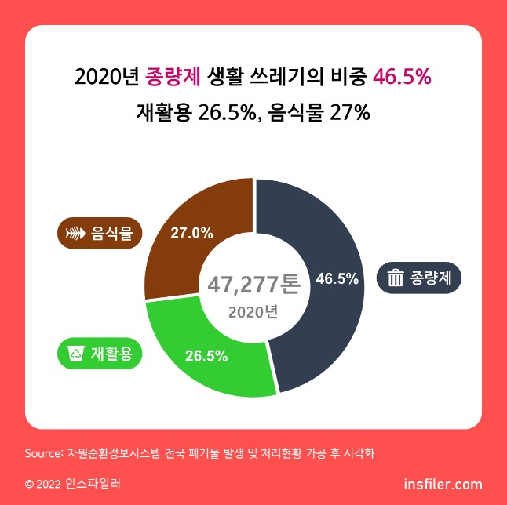

2020년 하루 평균 생활 쓰레기 배출량은 47,277톤, 2019년 대비 하루 평균 1,365톤(2.97%) 증가했습니다. 이 중 종량제 생활 쓰레기의 비중은 46.5% 거의 절반수준이며, 재활용 26.5%, 음식물 27%입니다. 특히 종량제 생활쓰레기는 꾸준히 늘어나서 2014년 대비 2020년에는 하루 평균 3,749톤(20.6%) 증가했습니다. 음식물 쓰레기의 비율이 높은 지역은 광주 & 전북, 재활용 쓰레기의 비율이 높은 지역은 부산 & 제주입니다.
2019년도 대비 2020년에 경기도의 모든 생활 쓰레기가 증가했습니다. 서울은 재활용은 늘고, 음식물은 감소했습니다. 총 배출량을 환산하면, 하루 한 사람이 0.9kg 생활 쓰레기를 배출합니다. 한 달(30일)이면, 1인당 약 27kg입니다. 초등학교 2학년 여학생 평균 몸무게 27.3kg과 유사합니다. 하루 4.7만톤(47,277톤)이면 일년 1,730만톤(17,300,000)이며, 100kg(=0.1톤)의 사람으로 비유하면, 약 1억 7천 3백만 명의 무게입니다.
